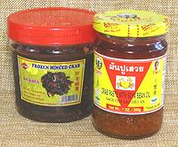

SAFARI
Users
Shrimp Sauce / Paste
 [Gkabpi / Kapi (Thai), Terasi (Indonesia), Blachan / Petis Udang (Malay),
Mam tom / Mam ruoc (Vietnam), Bagoong alamang (Philippine), Hom ha /
Hay koh (China)]
[Gkabpi / Kapi (Thai), Terasi (Indonesia), Blachan / Petis Udang (Malay),
Mam tom / Mam ruoc (Vietnam), Bagoong alamang (Philippine), Hom ha /
Hay koh (China)]
Shrimp paste> is very important to sauces and dishes
throughout Southeast Asia and Southern China. Basically it's shrimp,
usually very tiny shrimp, salted, fermented, and dried until it breaks
down into a paste which may be bottled or pressed into cakes.
Much has been made of the overpowering smell and strong salty taste,
but I haven't noticed these to be a problem, at least in high quality
bottled products. Now the pressed block products are another matter
entirely, you're going to want to seal them up tight in a jar. For details
see our Shrimp Sauce Page.
Shrimp - Dried
[Hibi (Philippine); Ebi (Indonesia); Ebi (Japan (fresh or dried)); Kung Haeng (Thai); Tom Kho (Viet)]
Dried and Smoked shrimp have been important since mankind first learned
to go to sea in boats, and make nets from local fibers. They are
important as a powerful flavoring element in almost every country that
has a seacoast, and to some that do not. For types and culinary details
see our Shrimp - Dried page.
Crayfish - Dried & Smoked
[Nematopalaemon hastatus (Estuarine Prawn) | Exhippolysmata hastatoides (Companion Shrimp) | Macrobrachium vollenhoveni (African River Prawn)]
Confusion! West African "Crayfish" are
freshwater Shrimp (or Prawns, depending on your preferred terminology)
and are not closely related to North American Crayfish, which are
fresh water lobsters. The catch is predominantly of the three species
listed above. West African Crayfish are usually smoked, which is why
you will find recipes listing both "Dried Crayfish" and "Dried Shrimp".
For details see our
Crayfish - Dried & Smoked
page.
Crab Paste / Sauce
 [Gach Cua Xao Dau An (Thai) | (Rice Paddy Crab sauces) Ba Khia, Nuoc Cot Cua Dong, Gia Vi Cua Nau Bun Rieu (Viet); Nam Bpo (Thai); Taba ng Talangka, Aligue (Philippine)]
Crab Pastes are not as widely used in Southeast Asia
as Shrimp Pastes, but rice paddy crab sauces and pastes are very
important in Laos and Issan, Thailand, where there is no access to the
sea, and are also used in Vietnam. A entirely different crab paste is
very popular in the Philippines, made not from crab meat or ground up
crabs, but from the eggs of tiny crabs. For details, including how to
make some of these sauces and pastes, see our
Crab Paste / Sauce page.
Scallops - Dried
[Conpoy (Cantonese)]
This is a popular and well though of flavoring for soups and similar
dishes. It is the dried adductor muscles that close the scallop's shell.
Small ones run about 2021 US $61 per pound, while larger ones, about 3/4 inch
diameter, will be over 2021 US $100 / pound. They are sold by size in grams,
1G, 2G, 3G, 4G. 2G is a popular size, but the photo specimens are 1G,
purchased from a large Asian market in Los Angeles (Alhambra). The flavor is
quite powerful, so just a few small ones will usually do the job. They can
be crushed and added to recipes without soaking, but are often soaked and
then shredded.
Scallops - Dried
This product is not the scallop's adductor muscle, but the mantle that surrounds the body. It is a substantial piece of the scallop and has a flavor similar to the adductor, but the texture is different. Chopped up in soup, it doesn't really matter. The photo specimens were purchased from a large Asian market in Los Angeles (San Gabriel) in a 6 ounce package for 2019 US $26.64 / pound, about half what the smaller adductor muscles fetch.
Clams - Dried
Faced with a West African recipe that asked for Dried Clams, I found my usual Asian market didn't have them. So, I bought a 14 ounce bag of frozen Asian littleneck clams for 2018 US $3.76 / pound. I salted them for a couple hours, drained them and put them in my electric dehydrator set to medium. In a few hours I had dried clams. The 14 ounce bag of frozen clams yielded 2-1/4 ounces of dried clams, or 2018 US $23.34 per pound.
Mussels - Dried
[Qing kou gàn (China)]
Yet another dried shellfish used in Asia to add flavor to soups and
sauces. These have a stronger, darker flavor than the dried clams. The
photo specimens were purchased from a large Asian market in Los Angeles
(San Gabriel) in a 3 ounce package for $25.01 / pound.
Oysters - Dried
[Háo shì (China)]
Dried Oysters are used to flavor soups and sauces, and are also featured
at Chinese New Years, combined with
Fat Choy / Black Moss, both due to their
names suggesting words for good fortune. Fat Choy, a dry land
cyanobacteria, has no redeeming culinary or nutritional value, may be
toxic, and its harvest is ecologically damaging. The oysters are,
however, edible, with a strong dried shellfish flavor. Chinese consider
the best to be big ones from Korea and Japan. I have ordered Chinese
ones on-line for 2018 US $27.57 / pound with free shipping.
Photo from the
Center for Food
Safety, government of Hong Kong.
Cuttlefish Ink / Squid Ink
Available in small jars and tiny 4-gram packages (and probably some
in between) this product is important as a black food coloring in Spain
and Italy. It is easily available from on-line sellers of Spanish food
products. In Italy it is often used to dye pasta black. While Cuttlefish
Ink is most common, Squid Ink is also sometimes used.